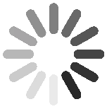

Jiangman (Lobi) Zhao
Project
Unity Shading
Car painting
- Shading in Unity engine.

- Using Substance create a distance map, shading to mimic the shape of a flame.


//////////////////// fragment shader snippet ////////////////////
...
float speed = frac(_Time.x * + _lavaSpeed);
float4 wave = tex2D(_lavawaveTex, (i.texcoord.zw + float2(0, speed)) * 2) * 2 - 1;
wave = wave.r * _lavaWave;
float4 gas = tex2D(_lavawaveTex, float2(i.texcoord.z * _gasOffset.x, i.texcoord.w * _gasOffset.y + frac(_Time.y * + _gasOffset.z)));
float4 lava = tex2D(_lavaTex, float2(i.texcoord.zw + wave.xy));
float4 mask = tex2D(_lavaTex, i.texcoord.zw);
lava = (lava.r + gas.g * _gasOffset.w) * _lavaCol * mask.g;
...- Other types of car paint.
- Stylized cloud material.
//////////////////// vertex shader snippet ////////////////////
...
// make noise in worldSpace
float speed = frac(_Time.y * _speed);
float3 blend = v.vertex.xyz * _scale;
float4 noiseXY = tex2Dlod(_Noise, float4(blend.xy + speed, 0, 0));
float4 noiseYZ = tex2Dlod(_Noise, float4(blend.yz + speed, 0, 0));
float4 noiseXZ = tex2Dlod(_Noise, float4(blend.xz + speed, 0, 0));
float4 noise = noiseXY;
// lerp
noise = lerp(noise, noiseXZ, o.normal.y);
noise = lerp(noise, noiseYZ, o.normal.x);
o.color = v.color;
noise *= o.color;
//noise plus v.vertex
v.vertex += v.normal * (noise * _range);
o.pos = UnityObjectToClipPos(v.vertex);
...- Liquid wave material.
fixed4 frag(v2f i) : SV_Target
{
// WAVE cubemap
float speed = frac(_Time.y * _speed);
float3 flowDir = tex2D(_fmap, float2(i.texcoord.x * _offset.x + speed, i.texcoord.y * _offset.y)) * 2 - 1;
flowDir *= _strength;
float offset0 = frac(_Time.w * 0.5 + 0.5);
float offset1 = frac(_Time.w * 0.5 + 1.0);
float offsetlerp = abs((0.5 - offset0) / 0.5);
fixed4 msk = tex2D(_MaskTex, i.texcoord);
fixed4 refl0 = tex2Dproj(_ReflectionTex, UNITY_PROJ_COORD(i.refl) + float4(flowDir.xy * offset0, 0, 0));
fixed4 refl1 = tex2Dproj(_ReflectionTex, UNITY_PROJ_COORD(i.refl) + float4(flowDir.xy * offset1, 0, 0));
fixed4 refl = lerp(refl0, refl1, offsetlerp);
refl.a *= msk.r * _Alpha * i.color.a;
return refl;
}Card battle
- In game low cost dynamic shadow


Tools Development
- Organize assets and generate USD files. Built with Python.Link


- Developed a C++ image processing tool that supports multithreading for efficient performance.Link

-
Designed and implemented a Python-based Qt tool to export cache files into Unreal Engine, improving workflow efficiency.
-
Implemented a Python-based Qt interface for a hair plugin, facilitating seamless integration and user interaction.


- Developed a curve editor supporting linear and cubic Bézier curves using C++ and CMake.

- Created a Qt-based 2D drawing tool using OpenGL and C++.

rigging
Facial rigging
- Base on Unreal MetaHuman, rigging facial mesh in maya, modifying and generating new DNA source.
Dynamic bone
- Set in game hair Dynamic Bone.


Grooming
- Create by maya tool that made by our TA team. Creating hair card maps base on XGen and modeling FurCard by self developed tool.

- Hair Rendering in Unreal Engine.

- Animal fur test. Baking vertex color on FurCard mesh blend base color fo body model in unreal engine

Modeling
chess Game Online
- Modeling and drawing texture rendered in unity engine


substance workflow
- Substance Designer work flow. Quickly create textures using only SmartMaterial.


PhotoScan workflow
- Create textures using PhotoScan workflow.


Patent
- As main Inventor-shadow in SNS game : CN110517346B

terrain shadow case
- Set a camera as the light position, get a renderTexture


- Shading and sampling RT
// project RenderTexture in world position v2f vert(appdata v) { fixed4 tex = tex2D(_MainTex, i.texcoord); fixed spec = tex.a; float2 shadow_uv = mul(_ShadowVPMatrix, i.worldPos).xy * 0.5 + 0.5; fixed atten = tex2D(_CurrentShadowmap, shadow_uv).r; fixed4 shadow_color = lerp(_ShadowCol, fixed4(1, 1, 1, 1), atten); //blend shadow and texture tex = _MainColor * _DirectionalLightColor * shadow_color * tex; half4 normalMap = tex2D(_BumpMap, i.texcoord); half3 normalDir = normalize(UnpackNormal(normalMap)); half3 viewDir = normalize(i.viewDir); half3 lightDir = normalize(i.lightDir); half3 h = normalize(viewDir + lightDir); float r = max(0, dot(h, normalDir)); tex += _SpecularCol * spec * pow(r, 48); return tex; }element shadow case

Cabin Building - Bake 4 directional shadow in solo channel

Directional Shadow - Shading and sampling RGBA channel shadow, and then dye color to them
fixed4 frag(v2f i) : COLOR { fixed4 tex = tex2D(_MainTex, i.texcoord.xy); //added shadow information fixed4 lm = tex2D(_ShasowTex, i.texcoord.zw); fixed shadowvalue = dot(lm, _ShadowDir); tex = lerp(tex * shadowvalue * _ShadowCol, tex, shadowvalue); tex = lerp(tex, tex * _LightPower, shadowvalue * 1.8); #ifdef _GRADIENT_ON tex *= i.gradient; #endif return tex; }elements batch
- Generating UV3 to show shadow channel, and then to deal static batch.

Player Building 
Running Batched about me
Education
University of Pennsylvania. USA, PA
-
Computer Graphics and Game Technology Sep 2024 - Oct 2026
-
Computer and Information Technology Sep 2023 - Jul 2024
Skills
Programming Skills
- C++, C, Assembly, Python, Java, OpenGL, GLSL
DevTools
- Snapdragon Profiler, Unity, Unreal Engine5, Qt creator, cMake, Maya, Substance Designer
Core Skills
- Computer Graphic, Developed and optimized mobile application, Scripting, Shader-Programming
Contact